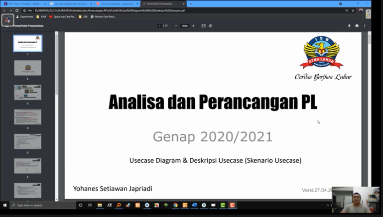

NIM : 1811500096
Nama : Teuku Reynaldi
Kelompok : TI6J
Hasil Saduran :
1. Menjelaskan kembali tentang rencana pembelajaran dalam satu semester kedepan dalam mata kuliah Analisa & Perancnagan Rekayasa Perangkat Lunak.
2. Menjelaskan kembali sistem perkuliahan untuk mata kuliah Analisa & Perancangan Rekayasa Perangkat Lunak
untuk kehadiran & nilai tugas individu menggunakan github.com , guna memudahkan dalam penyaduran materi perkuliahan tiap pekan
dan sebagai bukti kehadiran.
3. Mempelajari tentang usecase diagram dalam hal ini penggunaan Usecase Diagram untuk pengguna utama perangkat lunak dan Usecase Diagram untuk pengguna admin perangkat lunak.
4. Mempraktikkan cara mendeskripsikan Usecase diagram kedalam tabel untuk memudahkan dalam pendeskripsian aktifitas yang dialkukan baik oleh pengguna utama (konsumen),
pengguna admin dan sistem yang berjalan.
Dokumentasi Pembelajaran :

Diagram Usecase:

Download File Latihan Usecase Diagram dan deskripsi usecase: disini